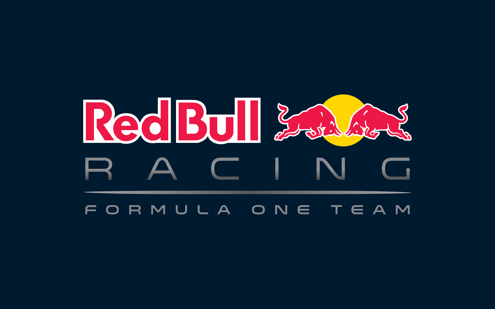
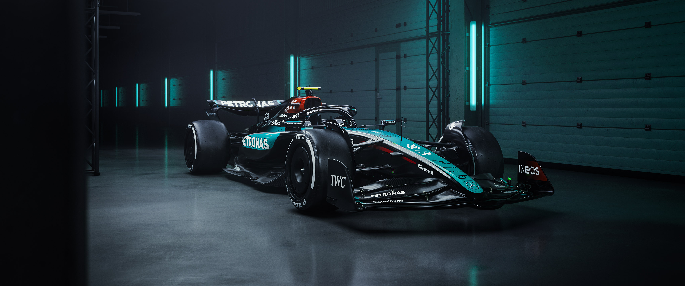

RED BULL RACING

Founded by Dietrich Mateschitz|Driver: Max Verstappen,Yuki Tsunoda
Red Bull Racing (officially Oracle Red Bull Racing) is a top-tier Formula 1 team, owned by the Red Bull GmbH energy drink company, competing under an Austrian license but based in the UK, known for its dynamic performance, multiple championship wins (drivers' & constructors'), and star drivers like Max Verstappen, leveraging high-tech simulations for strategy and engineering.For the 2025 Formula 1 season, Oracle Red Bull Racing's main drivers are Max Verstappen and Yuki Tsunoda, with Isack Hadjar promoted to partner Verstappen for 2026, replacing Tsunoda, who moves to Racing Bulls alongside Liam Lawson, while Arvid Lindblad joins Racing Bulls as well.Key Aspects:
Name: Oracle Red Bull Racing (due to title sponsorship).
Location: Milton Keynes, United Kingdom.
Ownership: Red Bull GmbH.
Drivers (2025): Max Verstappen & Yuki Tsunoda.
Achievements: Multiple World Championships (Drivers' & Constructors') and numerous race wins.
Technology: Utilizes Oracle Cloud Infrastructure (OCI) for extensive race simulations, boosting performance and strategy.
Car: Develops cutting-edge F1 cars, like the RB21, known for prioritizing peak aerodynamic performance, demanding precise driving.
HISTORY of BULL's

Red Bull Racing's history began with Dietrich Mateschitz buying the Jaguar F1 team (which itself came from Stewart Grand Prix) in 2004, rebranding it in 2005 to bring Red Bull's energy drink marketing into Formula 1, initially with drivers like David Coulthard and Christian Klien. After years of building, they found massive success, dominating from 2010-2013 with Sebastian Vettel winning four consecutive titles, and later entered another era of dominance with Max Verstappen, becoming a major force with numerous wins and championships.

Early Years & Foundations (2005-2008)
Origins:The team was formed from the ashes of the Jaguar Racing F1 team, which Red Bull purchased in late 2004.
Debut: Their first race was the 2005 Australian Grand Prix, with drivers David Coulthard and Christian Klien.
Building Blocks: The initial years focused on building infrastructure, with Christian Horner appointed Team Principal, and significant investment from Red Bull.
First Win: Sebastian Vettel secured the team's first Grand Prix victory in China in 2009.
Unprecedented Success: From 2010 to 2013, Red Bull Racing won four consecutive Drivers' and Constructors' World Championships, with Vettel as the driver.
Transition & New Era (2014-Present)

Engine Struggles: A difficult period with Renault engines followed the hybrid era's introduction, leading to a challenging few seasons.
Rise of Verstappen: Max Verstappen joined the team and became their youngest-ever race winner in 2016, signaling a new chapter.
Renewed Dominance: Partnering with Honda, the team returned to championship contention, with Verstappen securing multiple world titles, alongside numerous wins and podiums.
Key Figures
Dietrich Mateschitz & Helmut Marko: The visionaries behind Red Bull's F1 entry.
Christian Horner: Long-serving Team Principal.
Sebastian Vettel & Max Verstappen: The drivers behind their major championship successes.
MERCEDES-AMG PETRONA

Founded by Toto Wolff|Driver: George Russell,Andrea Kimi Antonelli
The Mercedes-AMG PETRONAS Formula One Team is a highly successful German-British works F1 team, renowned for its dominant era of consecutive Drivers' & Constructors' World Championships (2014-2020) and its "Silver Arrows" nickname, blending elite motorsport with Mercedes-AMG high-performance technology, designing and racing cutting-edge cars with drivers like George Russell and Andrea Kimi Antonelli from their Brackley/Brixworth bases.
Key Aspects:
Identity: Official works team for Mercedes-AMG in the FIA Formula One World Championship.
History: Long tradition in F1, returning as a works team in 2010, achieving massive success in the hybrid era.
Facilities: Operates from state-of-the-art Technology Centres in Brackley (design/manufacture) and Brixworth (power units) in the UK.
Drivers: Features George Russell and newcomer Andrea Kimi Antonelli for the 2025 season, replacing Lewis Hamilton.
Technology: Known for its innovative F1 cars (like the W16 in 2025) and advanced hybrid power units, often incorporating technologies from its road cars like the AMG ONE hypercar.
Ownership: A joint venture between Mercedes-Benz Group, INEOS, and Toto Wolff.
The Mercedes-AMG PETRONAS F1 Team's current main drivers for the 2025 season are George Russell, the established senior driver, partnered with rookie sensation Andrea Kimi Antonelli, who joined the team after Lewis Hamilton moved to Ferrari, with both drivers confirmed through 2026. The team also features talented juniors like Doriane Pin and Rashid Al Dhaheri in their junior academy.

McLaren FORMULA 1
Founded by Bruce McLaren|Driver:Lando Norris,Oscar Piastri
The McLaren Formula 1 Team is a legendary British motorsport team, the second-oldest and second-most successful in F1 history, known for its iconic papaya orange cars, multiple World Championships (Drivers' & Constructors'), and legendary drivers like Senna & Hamilton, competing from its base in Woking, England, with current drivers Lando Norris & Oscar Piastri, powered by Mercedes, and aiming for more wins with a culture of innovation and "bravery, ingenuity, and the thrill of the chase".

FERRARI
Founded by Benedetto Vigna|Driver:Charles Leclerc,Lewis Hamilton
Scuderia Ferrari is the iconic, legendary, and oldest Formula 1 team, competing since 1950, known as the "Prancing Horse" from Maranello, Italy, holding records for championships and wins, driven by passionate fans called the tifosi, and famous for blending Italian engineering with motorsport history under leaders like Enzo Ferrari and current chief Frédéric Vasseur.Key Aspects:
History: Founded by Enzo Ferrari in 1929, initially for Alfa Romeo, they became independent by 1947 and debuted in F1 in 1950, becoming the only team in every season.
Iconic Status: Inseparable from F1, representing Italian pride, performance, and heritage, with a vast global fanbase.
Success: Holds records for most Constructors' Championships (16) and numerous Grand Prix wins, with drivers like Schumacher, Lauda, and Alonso.
Base: Based in Maranello, Italy, a hub for automotive excellence.
Leadership: Led by Team Chief Frédéric Vasseur, focusing on cutting-edge technology and innovation.
Current Drivers (as of recent seasons): Charles Leclerc and Carlos Sainz (though driver lineups can change).
Beyond F1: Ferrari also competes and wins in other series like World Endurance Racing (WEC).